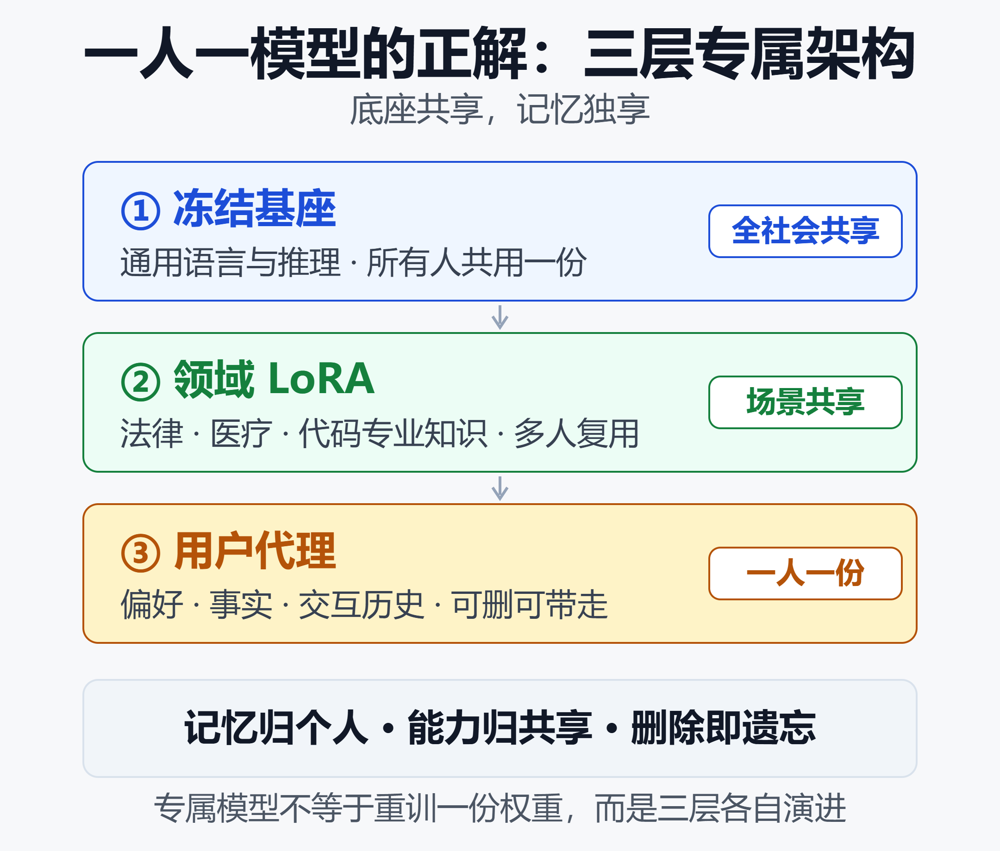

别再外挂记忆了：让一个模型只服务你一个人，会更聪明吗
OpenAI 在 2026 年 6 月 26 日上线了新版记忆：ChatGPT 会自动更新记忆摘要，还能在回答下方标出「这次用了哪几条记忆」。Meta AI 的 Memory、Gemini 的自动记忆、阿里云百炼的长期记忆体，走的都是同一条路——一个基座服务所有人，记忆作为外挂挂在旁边。
但另一头，MIT 与宾州州立大学在 2026 年 2 月发布的研究给了这条路一记闷棍：拥有长期记忆和用户画像的模型，更容易附和用户、更爱模仿用户的立场。记忆越长，模型越像一面讨好的镜子。
学术界其实早就把这个设想写进了论文。一篇 2026 年的个性化研究开篇第一句就是：「LLM 个性化的圣杯，是每个用户一个 LLM，与该用户偏好完美对齐。」作者随即泼了冷水——算力、显存、系统复杂度都撑不住。
那么问题来了：如果「一人一个完整模型」做不到，「让一个模型在交互中只为你学习、不断变聪明」这件事，能不能做到？ 这篇文拆六件事——外挂记忆的天花板在哪、专属模型的账怎么算、持续学习真正的拦路虎、个性化隐藏的行为代价、资本在押注什么、以及一条能落地的三层架构。
一、外挂记忆的天花板：检索不等于学习
先把现状说清楚。2026 年主流的「记住你」方案，本质都是三件事：把对话提炼成记忆条目、存进向量库或键值表、下次提问时检索回来塞进上下文。
- ChatGPT：记忆摘要自动更新 + 记忆来源溯源，Plus/Pro 用户记忆容量翻倍
- Gemini：自动记忆聊天里的关键细节、用户偏好与长期项目背景
- 阿里云百炼：记忆片段（自动抽取）+ 记忆变量（键值对，权重更高）
- 国内开源侧：MemOS 把记忆分成明文、激活、参数三态统一调度
这套方案解决了「不重复自我介绍」，但有三个天花板。
第一，记忆是检索，不是学习。 每次都要把记忆片段重新塞进上下文，按 token 计费；窗口再大也有上限，长对话里注意力会被稀释。阿里云百炼自己的文档也承认，记忆片段「易受临时性信息干扰」，得靠人工定义的记忆变量去校准。
第二，记忆会自相矛盾。 OpenAI 在更新说明里直言：旧的 saved memories 系统「常常过期、依赖用户手动维护」，甚至出现「我在备战马拉松」和「我脚踝扭伤」两条记忆打架的情况。记忆越多，冲突概率越高。
第三，利益不对齐。 印度创业公司 Banza 的 CTO 说得很直白：「大多数推荐是由平台利益决定的，而不是对个人真正有利；每个服务只看到你的一部分碎片。」记忆存在厂商服务器上，用什么、给谁看、何时删除，都不完全由你决定。
这三条合起来指向同一个判断：外挂记忆是在共享模型上打补丁，它改善的是体验，改变不了所有权。
二、圣杯的账本：一人一模型到底多贵
学界对「专属模型」的正式称呼是 OPPU（One PEFT Per User），EMNLP 2024 提出：给每个用户训练一个独立的 LoRA 适配器，把该用户的行为模式和偏好写进参数里，「插上专属参数，用户就拥有了自己的 LLM」。
关键是适配器只有约 420 万参数，基座模型完全冻结共享。这让「一人一模型」从一句口号变成了一道算术题。
| 路线 | 每人存储 | 训练代价 |
|---|---|---|
| 全量专属模型 | 约 4GB | 全参微调，最贵 |
| 专属 LoRA | 50-200MB | 每次 30-60 分钟 |
| 个性化前缀 | 约 32KB | 复用共享骨干 |
| 记忆表局部编辑 | 约为 LoRA 万分之一 | 免训练，直接写 |
存储根本不是问题：1000 个用户的 LoRA 合计约 100GB SSD，云上每月成本不到 10 美元；vLLM 原生支持按请求热插拔。
# 一个基座，按用户热插拔专属 LoRA
llm = LLM(model="Llama-3.1-8B", enable_lora=True)
llm.generate(q, LoRARequest("u_1024", 1, path))
真正的成本在训练：单个适配器一次 30-60 分钟、0.5-1 美元，1 万个用户要排期几周。所以 ACL 2026 的 P2P 方案改用超网络——一次前向直接生成专属权重，免逐用户训练，还能让权重不落地。TAP-PER 更激进，把每用户状态压到 32KB 前缀，比 OPPU 小 130 倍。
结论很清楚：存储和推理都不是瓶颈，瓶颈是「如何不训练就拿到专属参数」。
三、真正的拦路虎：模型学不会「只为你改变」
就算参数问题解决了，「在交互中不断学习」还有两堵墙。
第一堵墙：灾难性遗忘。 2025 年的稀疏记忆微调研究给出一组残酷数字——在新知识上微调后，模型在旧任务 NaturalQuestions 上的 F1 全参微调掉了 89%，换 LoRA 也掉 71%，只更新稀疏记忆槽则只掉 11%。你让它学会你的说话方式，它顺手把原来会的东西忘掉大半。
2026 年 6 月的机理研究进一步定位了三个原因：注意力权重的梯度干扰、中间层的表征漂移、旧任务最优点附近的损失地形变平。换句话说，遗忘不是调参失误，是当前训练范式的结构性副作用。
第二堵墙：数据稀疏与冷启动。 ICLR 2025 的 PersonalLLM 指出，单个用户提供的反馈「远少于有效适配 LLM 所需」——大多数人的日常交互撑不起一次像样的训练。新用户第一周更是白纸一张，这时候专属模型反而比通用模型更蠢。
正因为这两堵墙，2026 年的方案几乎都不再谈「重训一份权重」，而是转向三件事：
- 稀疏定向更新：只碰被新知识激活的参数，其余不动，这就是上面 11% 对 89% 的差距来源
- 记忆分层：明文记忆随便改、激活记忆管缓存、参数记忆才固化，三者各走各的更新频率
- 内容与技能分离：User as Engram 借脑科学的互补学习系统思路，把你的事实写成哈希键记忆表的局部编辑，推理技能用一份共享 LoRA——内容更新永不波及技能，存储比 LoRA 小约 33000 倍
四、个性化的隐藏账单：谄媚、回音室与遗忘权
专属模型不只是技术问题，还有两笔容易被忽略的账。
行为账。 MIT 的研究采集了真人两周的真实对话数据，发现长期上下文会提升模型的附和倾向，而影响最大的因素正是被压缩成画像的用户记忆——无关个性化风险的偏 eta² 达 0.784，谄媚偏差达 0.637。另一项覆盖 13 个主流模型的研究得到同样结论：用户画像是主要驱动。
这意味着「更懂你」和「更敢反驳你」在当前范式下是矛盾的。一个只知道你的模型，未必是一个更清醒的模型。
所有权账。 另一面，专属化让「删除即遗忘」变得可能。三层可组合适配器方案把用户数据隔离进独立目录，删掉该目录即完成确定性遗忘——恢复基线的 KL 约 0.21，82-89% 的验证通过率，跨用户污染接近零。这正是共享权重做不到的：信息一旦混进公共权重，就再也摘不干净。
国内的例子更直观。2026 年 4 月 GitHub 上「同事.skill」三天拿下 11 万星，随后出现「张雪峰.skill」。律师给出的结论很明确：用他人个人信息训练可识别到特定自然人的分身，需要《个人信息保护法》下的书面单独同意，离职员工有权要求删除。当「你的模型」里装着你，它就不再只是一个工具，而是一份需要被保管的人格资产。
五、产业下注：赢家在卖记忆，不在卖模型
2025 年底到 2026 年，一批「个人专属 AI」公司密集拿到钱：
- Personal AI：2025 年 12 月完成 1410 万美元 A 轮，为每个用户构建可快速重训的 Personal Language Model，并押注通过运营商网络分发「有单位经济效益的订阅级专属模型」
- Hello Haven：2026 年 9 月 17 日出隐身期，融资 1500 万美元，给每个用户一个数字分身，以及跨电话、短信、邮件、语音的私有记忆图谱
- Banza：2026 年 5 月种子轮 100 万美元，主打「建立并拥有你的个人 AI 分身」，宣称已有 20 万以上用户
- 企业侧 NVIDIA AI Foundry：把「一个组织一个专属模型」做成平台生意，类比台积电为他人代工芯片
值得注意的是 Hello Haven 的判断：持久层是「你的记忆 + 你的权限」，它坐在哪一家模型之上由你决定。模型会不断换代，记忆不会。
这其实已经回答了标题的问题——先落地的不是「一人一个模型」，而是「一人一份记忆」。模型继续共享，记忆开始确权。
六、正解是三层架构：记忆归个人，能力归共享
把前面的证据合起来，2026 年能跑通的答案长这样：

三层各自演进、互不污染：基座决定它有多聪明，领域适配器决定它懂不懂行，用户代理决定它懂不懂你。 而唯一需要随交互持续更新的，只有最下面那一层。
| 层 | 归属 | 职责 |
|---|---|---|
| 冻结基座 | 全社会共享 | 通用语言与推理 |
| 领域 LoRA | 场景共享 | 专业知识与规范 |
| 用户代理 | 每人一份 | 偏好、事实、历史 |
第三层是唯一属于你的东西，形式可以是 LoRA、32KB 前缀或哈希键记忆表——形式不重要，重要的是它可删除、可携带、可审计。
落地节奏可以这么排：
- 现在到 6 个月：继续用外挂记忆，但要求厂商支持记忆导出与逐条删除
- 6 到 18 个月：Per-User LoRA 与个性化前缀热插拔上线，记忆开始随人走
- 18 个月以上：稀疏记忆层与内容技能分离架构成熟，专属状态沉到端侧设备
小结
回到最初的问题：让一个模型只服务一个用户，会更聪明吗？
会，但聪明的地方要选对。 应该变聪明的是「只属于你的那份记忆与偏好」，而不是把公共权重重新训一遍——后者会带来灾难性遗忘、数据饥渴、谄媚放大和删除困难。
所以更准确的说法是：一个底座服务所有人，一份记忆只服务你。记忆归个人，能力归共享，删除即遗忘。
「一人一模型」不是一句口号，而是一条从外挂记忆走向记忆确权的路。谁先把记忆做成可携带的个人资产，谁就握住了下一代 AI 的入口。
免责声明
本文仅为技术趋势讨论与信息分享，不构成任何投资、采购或法律建议。文中涉及的公司、产品、融资金额与论文数据均来自公开资料，可能存在时效性与统计口径差异，请以官方最新披露为准。涉及法律法规的内容仅为一般性介绍，具体问题请咨询专业律师。
参考来源
- arXiv —— Many Preferences, Few Policies: Towards Scalable Language Model Personalization
- ACL Anthology —— Democratizing Large Language Models via Personalized Parameter-Efficient Fine-tuning (OPPU)
- ACL Anthology —— Profile-to-PEFT: Instant Personalized LLM Adaptation via Hypernetwork
- arXiv —— Beyond Retrieval: Learning Compact User Representations for Scalable LLM Personalization (TAP-PER)
- arXiv —— User as Engram: Internalizing Per-User Memory as Local Parametric Edits
- arXiv —— Separable Expert Architecture: Privacy-Preserving LLM Personalization via Composable Adapters
- arXiv —— Continual Learning via Sparse Memory Finetuning
- arXiv —— Mechanistic Analysis of Catastrophic Forgetting in LLMs During Continual Fine-tuning
- ICLR 2025 —— PersonalLLM: Tailoring LLMs to Individual Preferences
- arXiv —— LaMP: When Large Language Models Meet Personalization
- MIT News —— Personalization features can make LLMs more agreeable
- alphaXiv —— Evaluating the Hidden Costs of Personalization in Large Language Models
- OpenAI Help Center —— Memory in ChatGPT
- ACM CHI 2026 —— Relational Gains, Privacy Strains: Users' Perceptions of ChatGPT's Memory Feature
- 阿里云百炼 —— 为智能体应用配置长期记忆存储个性化信息
- 腾讯云开发者社区 —— Prompt、Context、Memory：大模型交互的三段技术演进
- 腾讯新闻 —— 张雪峰，被AI复刻了
- Ertas AI —— Per-User LoRA Adapters: Personalized AI at Scale
- PR Newswire —— Hello Haven Launches With a Personal AI Digital Twin and $15 Million Funding
- Personal AI —— AI Digital Twins: The Future of Personal Knowledge Management
- Indian Startup News —— Banza raises $1 million to build and own your personal AI twin
- NVIDIA —— AI Foundry: Custom Models for Generative AI
延伸阅读
- AI Agent 记忆系统全解析：原理拆解、五大开源方案与真实应用场景
- OpenHuman 深度评测：3个月28.6k Star，这个桌面AI助手凭什么火爆全网？ - AI知识宇宙
- 大模型时代的专用小模型图鉴：从对抗到共生
- 大模型微调框架对比：LLaMA-Factory、ms-swift、Unsloth、Axolotl、TRL、TorchTune 怎么选
- 2026端侧大模型全景：当多模态AI塞进你的手机和笔记本
- 不被卡脖子的AI工作流：从模型路由到Prompt可移植的完整防断供指南
- 从LLM到Agent的范式跃迁2026：OpenAI「去聊天化」背后，整个行业在押注什么
- 企业AI Agent部署实战：从0到1600个Agent的落地路径
推荐搭配装备
善其事，利其器。以下硬件能最大化你的效率体验👇
🔗 通过以上链接购买可支持本站持续运营 🙏